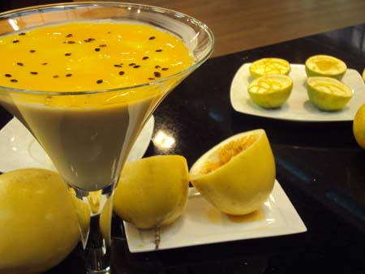

Receita - Mousse de Maracujá

Mousse de Maracujá
Ingredientes
- 1 lata de leite condensado
- 1 lata de creme de leite
- 1 lata de suco de maracuja
- 1 pacote de gelatina incolor
- Sementes de maracujá
Modo de Preparo
- Hidrate a gelatina na água, e depois dissolva em banho-maria
- Misture todos os ingredientes em um liquidificador
- Bata todos os ingredientes no liquidificador
Informações Nutricionais
| Carboidratos(g) |
40,56 |
10.82 |